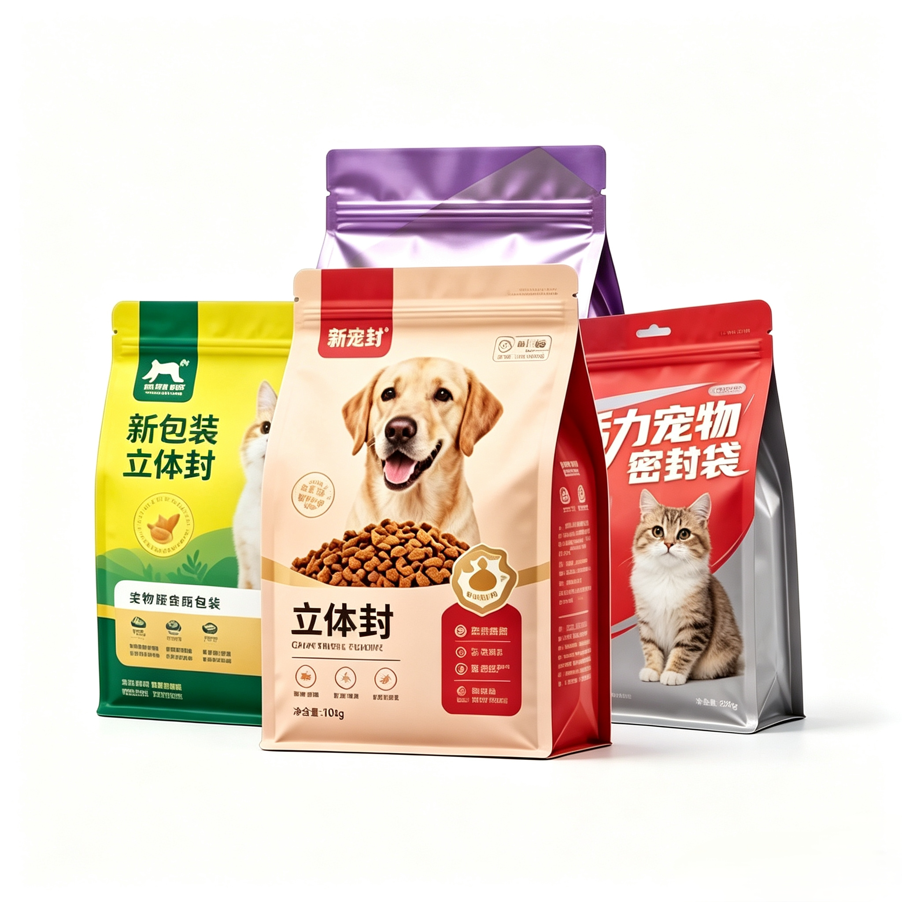

The Role & Value of Nylon in Large-Size, Liquid, Spout Pouch, Retort & Vacuum Packaging

Nylon (PA) is one of the most versatile and high-performance materials in flexible packaging, widely used in high-demand applications such as large-size pet food bags, liquid pouches, spout bags, retort pouches, and vacuum packaging. Its unique properties directly address the key pain points of each product category, bringing measurable quality improvements and added value.
1. Large-Size Pet Food Packaging
Role of Nylon: Nylon provides exceptional puncture resistance, tensile strength, and impact resistance. For large-format pet food bags (typically 5–20kg), it prevents tearing during stacking, transportation, and handling, even with sharp-edged kibble inside. It also maintains good low-temperature toughness to resist cracking in cold climates.
Key Benefits:
- Reduces breakage and spillage during transit
- Improves stacking stability in warehouses
- Extends shelf life by maintaining high barrier performance
- Enhances brand image with a stiffer, more premium bag feel
Typical Cost Impact: Adding a nylon layer usually increases the material cost by 10–20% compared to non-nylon alternatives, but it significantly reduces product loss and customer complaints.
2. Liquid Packaging (Water, Sauce, Oil)
Role of Nylon: Nylon's high chemical resistance and oil resistance prevent leaching and swelling when in contact with acidic, oily, or salty contents. Its excellent impact strength prevents pinholes caused by agitation during shipping, which is critical for liquid products.
Key Benefits:
- Prevents pinholes and leaks
- Resists oil/acid corrosion
- Maintains film integrity under dynamic transport conditions
- Enables thinner overall structures without sacrificing safety
Typical Cost Impact: Nylon-based structures typically cost 15–25% more than standard PE-only laminates, but they drastically reduce the risk of product contamination and returns.
3. Spout Pouches (Drinks, Detergents, Baby Food)
Role of Nylon: Nylon provides superior heat resistance at the spout welding area, preventing deformation or leakage during high-temperature sealing. It also improves the film's stiffness and formability, ensuring the pouch stands up straight and maintains shape on shelves.
Key Benefits:
- Strong, leak-proof spout seals
- Better stand-up performance and shelf presence
- Improved drop-test performance for filled pouches
- Enhanced consumer safety for food and liquid products
Typical Cost Impact: Using nylon in spout pouch structures increases costs by approximately 15–25%, but it enables higher-speed production and reduces seal failure rates.
4. High-Temperature Retort Packaging (Cooked Food, Ready Meals)
Role of Nylon: Nylon is the core functional layer for retort pouches, withstanding continuous high-temperature steam sterilization (typically 121°C–135°C). It maintains dimensional stability, high tensile strength, and excellent barrier properties even after retorting, preventing bag expansion or bursting.
Key Benefits:
- Maintains strength and barrier performance after retort processing
- Prevents bag deformation, bulging, or bursting
- Extends shelf life without preservatives
- Enables shelf-stable food products with long expiry dates
Typical Cost Impact: Nylon retort-grade laminates usually cost 20–35% more than non-retort alternatives, but they eliminate the need for refrigeration and extend product shelf life by months or years.
5. Vacuum Packaging (Meat, Nuts, Snacks)
Role of Nylon: Nylon offers excellent oxygen and moisture barrier properties, combined with high puncture resistance against sharp food edges (e.g., bones, nuts). It maintains high vacuum levels and prevents air ingress, preserving freshness and preventing freezer burn.
Key Benefits:
- Longer shelf life by maintaining high vacuum integrity
- Reduces oxidation and freezer burn
- Prevents pinholes from sharp food contents
- Enhances product appearance and shelf life
Typical Cost Impact: Nylon-based vacuum packaging typically costs 10–20% more than standard PE/PP laminates, but it reduces spoilage, waste, and returns.
Summary: The True Value of Nylon in Flexible Packaging
While adding nylon to packaging structures increases material costs by 10–35% depending on the application, the benefits far outweigh the investment:
- Safety & Compliance: Prevents leaks, contamination, and food safety issues
- Extended Shelf Life: Reduces spoilage and product waste
- Transport & Handling Performance: Cuts transit damage and customer complaints
- Brand Image: Improves shelf presence, perceived quality, and consumer trust
At Shenying Packing, we work with clients to optimize nylon structures to meet specific performance requirements at the most cost-effective price point. Whether you need high-strength pet food bags, leak-proof liquid pouches, or retort-ready packaging, we can tailor the right solution for your product.